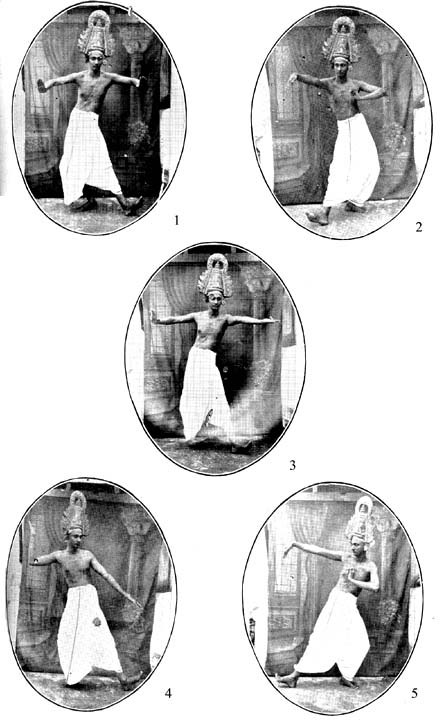
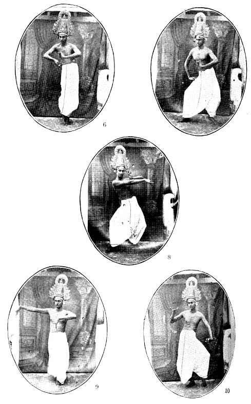
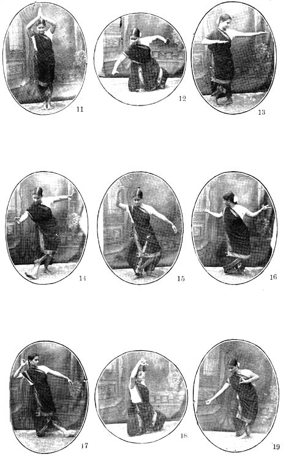
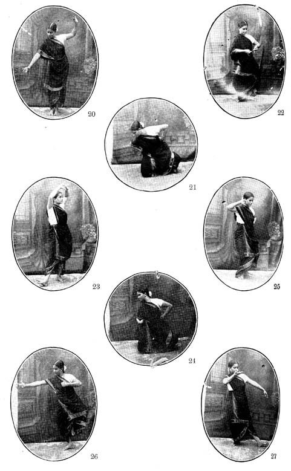

Dance Traditions of South India
1BY K. V. RAMACHANDRAN, B.A.
(Exclusive to ‘TRIVENI’)
(4)
The unit of the classical dance was the cadence known as ‘karanas’; a sequence of the ‘karanas,’ was the ‘angahara,’ and a tableaux based on these, in which one or more than one danseuse took part, was the ‘pindibandha.’ These cadences divided themselves into two types–the energetic masculine and the dainty feminine, named ‘tandava’ and ‘lasya’ and ascribed to Siva and Parvati respectively–cadences of pure dance that embellished and variegated the ‘purvaranga’ (prelude) of the ancient drama which, prior to their introduction, was plain and bare. The ‘karanas’ constituted an invocation and offering to the Gods, as well as a pictorial treat to the audience. Though originally requisitioned to enrich and beautify the preliminaries of the play, as the play grew and developed, these ‘karanas’ worked themselves into the body of the play, not only as decorative units but also as the basis and resource of the complex expression called ‘abhinaya.’ The assimilation, by the text of the play, of these cadences as pure dance and as media of ‘abhinaya’ perhaps led to the eventual elimination of the ‘purvaranga.’ The advent of the ‘karanas’ and their reactions on the drama and dramatists at a vital period of their evolution, is a chapter that deserves the closest study. The love situations of the drama, when interpreted by these dainty ‘lasya’ cadences, led to the extension of the meaning of the term ‘lasya’ to include not only the dance cadences and ‘abhinaya’ through them, but also the love situations so interpreted, the songs that embodied these, the music that was specially appropriate for them, as Abhinavagupta says, and, we may add, even the delicate cadences of the drum. Thus, what was originally the feminine analogue of the ‘tandava,’ at a later stage denoted a whole group of arts that had gathered round it when it interpreted the love themes and programmes of poets. Ten such essential love-themes were the ‘lasyangas’ of the later chapters of the Natya Sastra, designed to be rendered by a single danseuse. It is not easy to surmise whether the compositions comprised under the term ‘lasyangas’ represented ‘nritya-prabandhas’ that developed independently of the drama, but later got incorporated into it in some form, or whether it was the drama that gave them birth; nor is it possible to visualise each of these ‘angas’ in perfect detail. In one of them it is a dream that is the starting point of a delicious reverie; in another it is the image of the beloved that inspires a train of tender recollections; every note of Love is represented in these ‘lasyangas,’ petulance, reproof, reluctance and graciousness, and every phase of distress that separation provokes. Eight similar themes are enumerated by the Silappadikaram under the general name ‘vari.’ ‘Lasya’ compositions formed an important section of dance-poems in Tamil, illustrations of which are to be found, among others, in the anthologies Kalithokai and the Divyaprabandham. And in the art of the Arayars, the temple dancers of Tamil India, the ‘abhinaya’ exposition of the sacred ‘pasurams’ lives even today at Srirangam and Alwar- Tirunagari. And the learned commentators of the Divyaprabandham have left us authentic records of the occasions when the great Ramanuja, a master of ‘abhinaya’ himself, corrected the renderings of the Arayars when they went astray.
The term ‘lasyanga’ had still another meaning when it referred to those essential delicacies of poise and turn, of curve and glance that were present in and accompanied certain ‘desi’ (provincial) applications of the ‘lasya’ cadences. The essentials were not ‘desi,’ but their nomenclature was,–the reason why Sarangadeva calls them ‘desi lasyangas.’
The nautch as practised by the Devadasis in South India today embodies all these varieties of ‘lasya.’ The ‘alarippu’ is a dance invocation made up of some of those dainty cadences with which the ancient artists adored the deities at the commencement of the drama. The ‘varna,’ ‘pada,’ ‘javali’ and other compositions based upon various phases and situations of Love–the entire dance-anthology that makes up the current ‘abhinaya’ performance–bears more than a family resemblance to the ‘lasyangas’ of Natya Sastra and is in all probability descended from them. The ‘tillana’ of the Nautch, the ‘modi’ of the ‘Therukkoothu’ and the ‘kirijin’ of the Oothukkadu-Soolamangalam Bhagavatas, among others, make purposive use of some of those ‘desi lasyangas’ that Sarangadeva has recorded. The Tamil equivalent for ‘lasya,’ according to a quotation abstracted by Adiyarkunallar, is ‘mey’; and it is curious that a form of feminine dance called ‘mey’ is in vogue at Soolamangalam and is rendered ably by my friend Mr. Swaminatha Iyer, playing the role of a Woman.
The foregoing would explain the bias of the Devadasi art for predominantly erotic themes and its essentially feminine character. Indeed Love is the Supreme preoccupation of the Nautch; its programmes are lit with Love. It is not suggested that vigorous and forceful elements are absent from this art,–in fact the ‘nritta’ passages abound in powerful attitudes and movements, for instance, figure (4) which illustrates the middle of a Nautch cadence which could very appropriately introduce a Bhima, also those ‘abhinaya’ situations where man is portrayed. But on the whole the character of the Nautch is feminine, such femininity revealing itself not only in the ‘abhinaya’ themes like the ‘javali’ and the ‘pada,’ but also in the impersonal dances, especially those patterned sequences that make up the ‘tillana’: this ‘tillana’ may be defined as the portrait of Woman, the incarnation of all earthly Beauty and eternal theme of Art by a lovely young woman, through the dainty feminine dance ‘lasya.’ What a profound knowledge of the character and significance of the Nautch do modern reformers reveal when they want to expunge it of ‘sringara’ or replace it with ‘raudra’ and ‘bhibhatsa’ rasas! They would have the Nautch, like music, as a handmaid of loyalty, health and sanitation! It is fortunate that notwithstanding these reformers and decades of anti-nautch activities, the art continues to live and has produced several great artists–Ammalu of Pudukkottah and Gnanam of Tiruvalur, to mention only two,–in the past. Srimati Gouri of Mylapore is by far the ablest exponent of ‘abhinaya’ among the seniors of today; it would be invidious to single out individual artists from the younger generation, but an exception must be made in the case of Varalakshmi of Kumbakonam whose dances are marvels of precise and beautiful Co-ordination.
The pedigree of this art could be traced as far back as the Silappadikaram to the ‘ariyakkoothu’ and ‘akamargam’ which in a later age came under the loving care and protection of the great-souled Chola emperors, and was presumably taught by Brahmins– ‘Bhagavata-melas’ as their guilds were known (the ‘natya-kutapa’ of Bharata’s terminology) whose descendants are practising a dramatic variety of it in certain villages of Tamil Nad and Andhradesa. From internal evidence, one is led to suspect that Gopalakrishna Bharati who chose the ‘nrittamurti’ himself as the theme of his immortal music-drama, the Nandan Charitram, was a Bhagavata–that is a dancer himself; his is therefore the tribute of a professional to the Master of Dance. A vital part of Krishna Bhagavatar’s art was his dance and the dance tradition persisted till very recently in our ‘katha kalakshepams.’ The ‘harikatha bhagavatars’ of the present day have a confused art-lineage and some of them none at all.
A considerable section of Nautch Music is traceable to these early ‘bhagavatas.’ At some stage in its history, the art passed on to the ‘natuva melas’ –the guilds of non-brahmin teachers of dance–and the secrets of the art are jealously guarded by these people today. This community of dance masters has also produced several great men in the past, especially the brothers Sivanandam, Ponnayya and Vadivelu at whose hands, about, a hundred years ago, the performances appear to have unndergone some editing and assumed their present form condensed into the ‘single day’s programme’ made up of select items of dance and ‘abhinaya’ in the choice of which the taste of the last kings of Tanjore was perhaps in some measure reflected. Redactions presuppose the omission of forms due to exigencies of various kinds and it is probable that the preparation of this dance anthology involved many omissions; it would therefore be wrong to look upon the present day survival as representing the entire art, because contemporary literature gives us a richer picture of forms, in comparison with which the Nantch repertoire looks impoverished somewhat. Out of this limited repertoire the ‘mey’ is rendered by a single Brahmin artist today at Soolamangalam; the ‘modi’ has almost vanished, and the ‘daru’ survives in the dramatic traditions only; while the ‘swarajati’ and ‘ragamalika’ are remembered, they are not in evidence at performances; and as the first sign of the progressive administration of temples, dance service is discarded, the beautiful cadences of ‘malappu’ are being fast unlearned.
Nautch music (to distinguish it from the musician’s music) untouched by modern influences, remains a purer, more beautiful and refined form of the art. The music forms are common to both, but the music is different and distinctive,–a fact that people are slow to recognise on account of the inefficiency of the Nautch musicians of the present generation. The beautiful ‘varna’ in ‘Bhairavi’ by Adiyappayya and the equally beautiful ones of Govindaswamy are dance ‘varnas.’ If the great Tyagaraja had written plays, he might have fashioned such music as awaits us in the dramas of Soolamangalam and Oothukkadu. Were one given the choice, one would unerringly specify the ‘padas’ of Kshetragna as our highest musical creations,–slow, expansive, architectural–and these ‘padas’ constitute a rich heritage from the Nautch. It is unfortunate that specialists in these ‘padas’ are so few and their number is fast dwindling.

While the art remained faithful to the precepts which ensured its preservarion, its terminology has to some extent been vernacularised in Tamil India,–a phenomenon common to all localised forms of art. Thus the name ‘adavu’ designates, in the Tamil districts, a cadence–of the hands, of the feet, of the neck and of the hip individually also a co-ordination of these and identified by a syllabic label that furnished at the same time a rhythmic basis for the movements concerned. A sequence made up of a specific floor-contact and a patterned movement of the hands is an ‘adavu’ and recognised by a syllabic label; but this label comprises several similar and dissimilar sequences–whole groups of them in fact––and these are among the first things that the beginner has to learn to execute with fidelity, and consequently with grace. However gifted a person, a thorough discipline in these is an inescapable part of dance education just as alphabets and words are predetermined and inexorable essentials of a literary, and ‘swara’ and ‘tala’ of a musical, education. No sensible person would ever want to discard these basic essentials or furnish his own equivalents for them or reform them before he has understood them. The ‘thattadavu’ which comprises a homogeneous group of floor-contacts was familiar to the grammarians as the ‘samapadakuttanam.’ In the same way the ‘nattithattadavu’ in its three varieties was termed ‘purakshepakuttanam’ (fig. 3) ‘paschatkshepakuttanam’ and ‘parsvakshepakuttanam’ (fig. 4) according as the foot was planted in front, behind, or at side. This ‘adavu’ label comprises a cadence involving a jump and semi-circular steps to the accompaniment of opening and closing ‘alapallava’ and ‘sandamsa’ hastas; this was the ‘utpluti-uttanam.’ The ‘dhi ti tai’ which is the invariable finale of most dance sequences, really a variety of the ‘nattadavu’ in quick time accompanied by various kinds of patterned movements of the hands, was the ‘padaparsvakuttanam.’ An even movement of the feet with a simultaneous circular movement of the hands had the syllabic label ‘digi digi.’ The ‘thattimettadavu,’ a floor-contact involving the balls of the feet (fig. 16), was the ‘santadyaparshnikuttanam.’
The ‘anukkuradavu’ was the, ‘mridusparsanam;’ a few of the ancient ‘bhramaris’ too one meets with in the disguise of ‘adavus.’ This list of ‘adavus’ is capable of endless multiplication. My purpose in referring to them here is to show that the intricacies of the Nautch have been minutely studied, labelled and classified by artist-scholars in the past and it is no fault of theirs if some today, who are neither scholars nor artists, misjudge the art and its resources.
The ‘karana’ was the rythmic co–ordination of the patterned movement of hands and feet from a basic attitude. The cadence illustrated in figure (1) begins with the ‘mandala-sthana’ and a pair of ‘sikhara-hastas’ held opposite the breast are gracefully spread out as ‘patakas’ as the foot is established in front; the second movement involving a tap and a jump restores the original attitude with which the cadence started. This is an ‘adavu’ familiar to the artists of the Nautch as ‘ta tai tam.’ In the ‘nattithattadavu’ (fig. 3) the first movement takes the foot forward, the next carries, that foot behind the other swastika-wise, with an appropriate movement of the hands; the third movement plants the foot forward once again and the fourth restores it to the original position. The Nautch cadence ‘tai tai tatha’ (fig. 4) involves a lateral tilt of the body with hands to correspond on either side, completed by an energetic forward movement. All these three cadences could well be termed ‘karanas,’ because they fulfill all the essentials of a ‘karana.’ But the Nautch has forgotten quite as much as it remembers and it is in recovering the forgotten essentials that the extensive Natya literature, the intimate Natya sculpture and the authentic traditions of the art, render signal aid; even with all these aids our problem is not easy of solution because what is sough to be recovered is not the shape of this ‘hasta’ or that flexion, but the career of the movements in their entirety and the specific curves and contours of which they are composed.
Retaining the very floor-contacts described in the last para but substituting another movement of the hands, we derive two entirely different cadences, glimpses of which have been seized, in figures (2 & 5). Not only do they bear no resemblance to the previous ‘adavus’ in spite of identical floor-contacts, the two differ from each other employing identical hand movements in different directions. Likewise could we derive more cadences by varying the hand-movements and by combining them with other movements of the feet. Provisionally naming thsee two ‘karanas’ (figs. 2 & 5) ‘atikranta’ and ‘parsvakranta,’ let us endeavour to build up a section of an imaginary ‘nritta’ composition and begin it with the ‘tribhangi-sthana’ (fig. 6) and render some beautiful ‘rechakas’ of the neck (‘addiyams’ as Tamil India knows them) and pass on to the ‘parsvakranta karana’ (fig. 5) rendered by either hands and feet, then to the ‘ardhamattalli’ (see sculpture 2 of last section on ‘Dante Traditions) 2 with a few steps to the right and left, then to the ‘atikranta karana’ (fig. 2) on to the ‘karana-unmattaka’ (resembling fig. 11 of Gopinath in the last article but in a standing posture) with both the hands spread out instead of one and take some paces forward in terms

of a standard floor-contact; at this point the dancer if capable could attempt the ‘mayuravalitam’ (peacock cadence) with its difficult involution of the leg behind in imitation of the curl of the scorpion’s tail and graceful turns to the left and right; a single ‘nattadvu’ and a gyrating ‘bhramari’ leading the dancer back to the ‘tribhangi-sthana’ would conclude this imaginary dance-fugue in which an identical cadence of the hands is iterated through a series of ever-changing floor-contacts and supported by a beautiful attitude at either end. A ‘nritta’ passage such as this would represent an attempt at reconstructing the classical dance, especially the ‘karanas.’ If after have visualised the ‘karanas’ in precise and perfect detail, we attempt those sequences called ‘angaharas and the simple and composite ‘pindibandhas’ and the group dances, the ‘rasaka’ and ‘hallisaka,’ all based on the ‘karanas,’ this would represent a somewhat ambitious attempt at reconstructing the classical dance of India. But all these belong to the realm of research and are tardy and difficult of realisation even with the best aids and efforts. But the authentic traditions derived from the classical system offer no such problems and are the ultimate refuge of the artist. If, as demonstrated, a few changes could convert a Nautch cadence into a classical cadence and vice versa, it is not unreasonable to infer that tradition, far from retarding creative effort, actually helps it. By laying the foundation and imparting a knowledge of the fundamentals of the art, tradition equips the artist to tackle the mysteries of higher dance. It therefore remains the primary means of reconstructing the classical art.

To return to the Nautch. The most beautiful and captivating of the Nautch compositions is the ‘alarippu’–the first item on the programme which, as stated earlier, is a dance invocation. Other than the ‘trisra’ and ‘misra’ varieties of this, two versions of the ‘alarippu’ have survived –one in the Devadasi tradition and the other at Soolamangalam with some difference between them. Whether or not this was the ‘mukam’ mentioned by Silappadikaram which embodied the three ‘rechakas’ of the neck, hip and feet, it certainly resembles the karana ‘vaisakha rechitam’ in the incorporation of these ‘rechakas,’ only they are rendered from a basic ‘samapada–sthana’ instead of the ‘vaisakha.’ Beginning with the ‘samapada’ attitude, the torso thrown slightly forward, shoulders relaxed and palms meeting each other overhead as though the karana ‘leenum’ was employed in divine adoration (fig. 11) to the accompaniment of bewitching glances and smiles and movements of the brow–a ‘naivedya’ of feminine graces–followed by some elegant ‘addiyams’ of the neck in double quick time, the hands are brought gracefully down as outspread ‘patakas,’ shoulder, elbow and wrist on level; follows a duet between the neck and the hands, a crisp expressive movement of the hands responding to a caressing movement of the neck, emphasised by an appropriate turn of the hip; follows a movement of the neck and hands in unison, each hand reaching the neighbourhood of its shoulder, describing undulating patterns of petal-like symmetry and diverted back to their original position as outspread ‘patakas’ whence they return to the neighbourhood of the chest in pretty alternation, with a faint suggestion of the karana ‘vaksha-swastika’; the overhead ‘anjali’ is rendered once over and the hands are brought down as outspread ‘patakas’ and in a semi-seated posture called ‘motitam’ (fig. 12) all the previous cadences are iterated once again seriatim; follows what resembles the karana ‘swastika-rechitam’ in the course of two lateral movements (fig. 13); varieties of the ‘dhi ti tai’ cadence are now rendered along with a forward movement, accompanied by the beautiful action of both the hands in unison and alternation; then the ‘digi digi’ cadence to a backward movement along with a circular ‘vartana’ of both the hands; the ‘alarippu’ ends with a third overhead ‘anjali’ and the outspread ‘patakas’ elegantly brought down, shoulder, elbow and wrist on level. A prosaic description like the above cannot convey even a fraction of the charm of this entrancing sequence, which must be seen over and over again to be enjoyed. Among the renderings of ‘alarippu’ during the last three or four years at Madras, that of Varalakshmi stands out in the writer’s memory as the most exquisite. No wonder that the ‘alarippu,’ like the lotus and other choice gifts of the earth, was set apart as an offering to the Deity–a gift so irresistibly beautiful and so precious that only the gods were worthy of it!
The ‘jatiswara’ is a composition danced to a ‘swara sahitya’ in several sections; this ‘sahitya’ is just an incidental accompaniment and confined to the briefest compass, the real theme and essence being the dance. Beginning with a semi-seated posture, it passes on to the ‘samapada sthana’ from which a semi-circular movement of the ‘pataka’ hand is executed with the right foot planted forward (fig. 14) and is repeated by the left hand and foot with a dainty ‘addiyam’ in between; follow inward evolutions of either hand leading to the ‘nattithattadavu’ (fig. 3) with a rhythmic subtlety forked in; then the sculpturesque attitude of figure (15) with a neck movement and slight forward progress; follow two lateral movements simitar to that denoted by fig. 13 of the ‘alarippu’; then the cadence ‘tai tai thatha’ embodying a lateral tilt and foot planted on side (fig. 4) in either direction; a few ‘dhi ti tai’ cadences conclude the first section of the ‘jatiswara.’ The other sections enshrine other beautiful movements of the hands and floor-contacts like the ‘tattimettadavu’ (fig. 16). The ‘jatiswara’ is the one composition of the Nautch which a mere male could render without loss of beauty.
The ‘adavus’ are the basis of the dance of the nautch; and a unit of dance called ‘tirmana’ is made up of a series of these strung together in the ‘tala avartas.’ ‘Tirmana’ corresponds to a decorative device in architecture and like a refrain or a musical ‘sangathi’ is an ever-recurring unit of dance as a prelude, an interlude and finale. Thus the ‘tirmana’ preludes the ‘sabda,’ the next item on the programme which is really a duet of ‘nritta’ and ‘abhinaya’ or rather a piece of ‘abhinaya’ with a fringe of ‘nritta’ running all around it and in between. As many of the present day misconceptions of the art are founded upon a confusion of the relationship between ‘nritta’ and ‘abhinaya,’ we may take this opportunity of defining them. ‘Nritta’ is the origin–‘prakriti’; ‘abhinaya’ is ‘vikriti’ something derived from ‘nritta.’ The one like the ‘raga’ is the basic resource; the other like the ‘kirtana’ is a concrete application of it. The ‘kirtana’ therefore demands the preamble of the ‘raga’ and plenty of it in the form of improvisations, in between and at every pause, as a kind of frame-work and setting. As ‘abhinaya’ is the application of dance forms, it requires pure dance to sustain it not only from within, but also from without and all around and at every interstice. Yet there are some among us who adore ‘abhinaya’ but hate dance!
Its sustenance of rhythm too, ‘abhinaya’ derives from dance,–from the feet which keep up a continuous syllabification with which the significant gestures of the hand, movements of the eye and eyebrow have to coincide; to disown dance therefore is to disown rhythm. This very rhythm pervades those static attitudes,–the ‘mandala’ and ‘samapada’ sthanas of the Nautch and the ‘vaisakha–sthana’ of Kathakali which initiate and sustain dance and ‘abhinaya.’ These harmonies of line and balance, as we might term the ‘sthanas,’ and harmonies of line and movement, as we might call the ‘karanas’, supreme dance forms both, constitute also the supreme resources of ‘abhinaya’; to deny dance therefore is to deny ‘abhinaya.’ The Nautch does embody some of these as media of ‘abhinaya ‘–for instance fig. 27 which represents Krishna in the act of drinking milk which occurs in the ‘sabda’ and figure 17 which portrays the dignity and profundity of the hero and is frequently employed. Other examples of such protraits are to be found in the ‘abhinaya of the gods. There are also the seated and recumbent ‘sthanas’ of dance for which the ‘abhinaya’ of the Nautch offers little scope but which the dramatic traditions have seized and utilised. If the Nautch had remembered all the classic attitudes and cadences and our dance masters and artists had been conversant with them all, the ‘sthanas’ and ‘karanas’ might have found more frequent employment in ‘abinaya’; but as it is, we meet with just a few of them and far between. Conversely perfect ‘abhinaya’ is impossible without a knowledge and mastery of these essentials. Glimpses of a few of these forgotten essentials we have attempted to recover in figures 6,7,8, 9 and 10. The ‘vaishnavasthana’ occuring as a phase of the karana ‘katisama’ (fig. 7) and the ‘tribhangisthana ‘ (fig. 6) could well denote the gods–especially Krishna, and by varying the ‘mudras’ we could depict his various ‘lilas.’ The karana ‘vyamsita’ (fig. 9) could find employment in the portraiture of Hanuman. The ‘karihasta’ cadence attempted in figure 8 could be a dance portrait of Dance. The ‘alapallava-soochi’ (fig.10) could be effectively employed in the ‘abhihaya’ of wonder. These very cadences, with others suitably strung together, would form a sequence of pure dance of the classical type. Let it not be forgften however that to enrich dance in the manner indicated, is one thing, and to reform it, quite another.
The next item ‘varna’ is the most elaborate composition of the Nautch. In structure it does not differ very much from the ‘varna’ of music, though the music, in common with other ‘sahityas’ of the Nautch, is superior. Here again is a preliminary ‘tirmana’ and ‘tirmanas’ between one section and another. The ‘tirmanas’ of the ‘varna’ are ampler and possess considerable elements of beauty, embodying as they do come of the most beautiful cadences of hands and feet (figs. 1, 16 & 19) The ‘abhinaya’ also is more minute and detailed, and the balance between ‘nritta’ and ‘nritya’ is perfectly maintained except in the ‘charana’ section where there is a release into ‘nritta’ phantasies embodying a great variety of foot-movements and rhythmic variations–a sudden flood of ‘nritta’ overwhelming the tide of ‘abhinaya’– rather Dance which had been enchained to sense and given the lowly office of interpretation, breaking free of the bondage and setting the pace for Music, while Music is content to meekly follow from a distance. This ‘nritta’ crescendo for which the ‘sahitya’ passage is just an afterthought is the most beautiful part of the ‘varna.’ If the modern reformer would un-sex ‘lasya’ and make it accommodate themes he considers appropriate, here also he finds the ‘nritta’ superfluous and best lopped off. Did not the late Dr. Vincent Smith think the beautiful forearm–the ‘karihasta’–of the Nataraja superfluous and recommend its amputation?

‘Tillana’ brings us to the end of the dance programme of the Nautch. Barring the ‘alarippu,’ this is the most captivating item of pure dance, not sensuous by any means, but infinitely aesthetic and one that should be awaited in pleasant anticipation. The early sections of it resemble the ‘jatiswara’ very much in the ‘griva’ and ‘kati’–rechakas’ and the sculpturesque forward movements (fig. 15); suddenly the structure changes and a few simple cadences epitomise all the queenly majesty of woman, all her airs and graces, glances and turns of head in a most vivid and intriguing manner; one moment she is gracious and smiling; suddenenly he turns away in exquisite caprice vouchsafing the vision of her barest profile to reappear under guise of an entirely different mood (fig. 22); and like a musical artist who alternately conceals and reveals the ‘raga’ in rendering the ‘tana; she places the forefinger of a ‘soochi ‘ hand on cheek roguishly in terms of the ‘gandasoochi–karana’ (fig. 25) and beats a slow retreat concealing and revealing her face as she moves along; in an access of playfulness she returns again and permits a vision of her half-averted face in a framework of uplifted and interlocked ‘nritta-hastas’ (fig. 23); in sheer delight she lifts one foot and darts a hand across in hasty recollection of the karana ‘valitam’ (fig. 26); now she plays a whimsical male role in executing the karana ‘parsvajanu.’ If the visible arts of painting and sculpture based themselves on Natya and drew their sustenance of true rhythm from its ‘sthanas,’ the ‘tillana’ provides an instance of Dance borrowing the ‘sthanas’ of Painting–the full, half and three-quarter views for its own ends. ‘Kinjin’ corresponds to the ‘tillana’ in the Southern dramatic tradition; and it is said of Sitarama Bhagavatar of Soolamangalam, an expert in feminine dance and a consummate master of the art of revelation in concealment that hundreds of professional dancing girls would hasten to witness his renderings to learn therefrom. And the story teller adds that this super-artist had the highest admiration for the art of Ammalu of Pudukkottah. What a marvel of marvels this Ammalu must have been.
The ‘modi’ introduces the woman character in Therukkoothu. Beginning with a courtesy to the audience in terms of the karana ‘leenum’ rendered in several directions, palms meeting each other opposite the breast, it passes on to the semi-seated posture ‘motitam’ from which it derives its name; a semi-acrobatic movement imposing considerable strain on the hip is now rendered with the hands interlocked overhead (fig. 18) passing on to two kinds of lateral movements with hands on hip (fig. 21 & 24); these movements occur in the ‘tillana’ from a standing posture and in the ‘jatiswara’ with a hand accompaniment (fig. 14). Then follow movements curiously reminiscent of the karanas ‘kunchitam’ and ‘chakramandalam.’ The dancer gets up now and iterates some of these movements from a standing posture; the ‘modi’ concludes with a variety of the ‘parivritta karana’ (fig. 23) and the ‘gandasoochi’ (fig. 25) and a ‘tirmana’ finale.
In ‘abhinaya,’ ‘motitam’ denoted the sweet reluctance of woman–one of the meanings of the Tamil word ‘modi.’ From the acrobatic bend the Tamil word ‘modi’ derived another sense. Tamil is indebted to dance for the word ‘oyyarum’ from the ‘oyarakam’ that denoted the oblique lowering of the head (fig. 20)–one of the ‘desi-lasyangas’ of Sarangadeva. These ‘lasyangas’ occur in other compositions of the Nautch, but principally in the ‘tillana’; also in the ‘kinjin’ and ‘modi’ of the dramatic traditions. The karanas ‘parivrittam’ and ‘gandasoochi’ are shared by most South Indian systems.
The ‘Therukkoothu’ is responsible for the division of ‘adavus’ into masculine and feminine in realistaion of the truth that if Art could transform a simple rustic into a hero, it could likewise change him into a woman. The aim of art was not simple Truth, but complex Beauty; not imitative realism–‘lokadharmi’–but imaginitive transfiguration–– ‘natyadharmi.’ Similarly there is an art motive in the Nautch dress which is common to both the sexes–a feature shared by most South Indian traditions. By completely draping the female figure it excludes the remotest suggestion of the lewd; at the same time it impersonalises woman in some measure, so that a male artist could compete with her on terms of equality and even exel her as Sitarama Bhagavatar did in spite of his obvious natural disadvantages.
‘All the more tragic it is, the very tragedy of irony, that this dance, the one really Indian art that remains, has been, by some curious perversion of reasoning, made the special object of attack.’ So wrote an European admirer of the Nautch years ago when there was only the social reformer to reckon with. The variety of reformers we have to reckon with today is legion: reformers of the dance, reformers of ‘abinaya,’ reformers of music, reformers of dress and jewellery, reformers of the chorus, reformers of the stage and reformers who want to play colored light on the danseuse–every conceivable type of these has endeavoured to teach the art its needs. The writer ventures to express that, first and foremost, the art of the Nautch needs to be understood; it certainly needs no defence or apology; the supreme need at present is to leave the art free to seek its fulfillment in Bharata undeterred by the importunities of Reform. And to those who feel that the Nautch consists of dead forms, the only answer is, in the words of a famous wit, that where lovers of Beauty catch an effect, there are others who catch a cold!
1
The previous article appeared in Triveni for Jan.–Feb., 1935.2
Triveni, January–February, 1935.